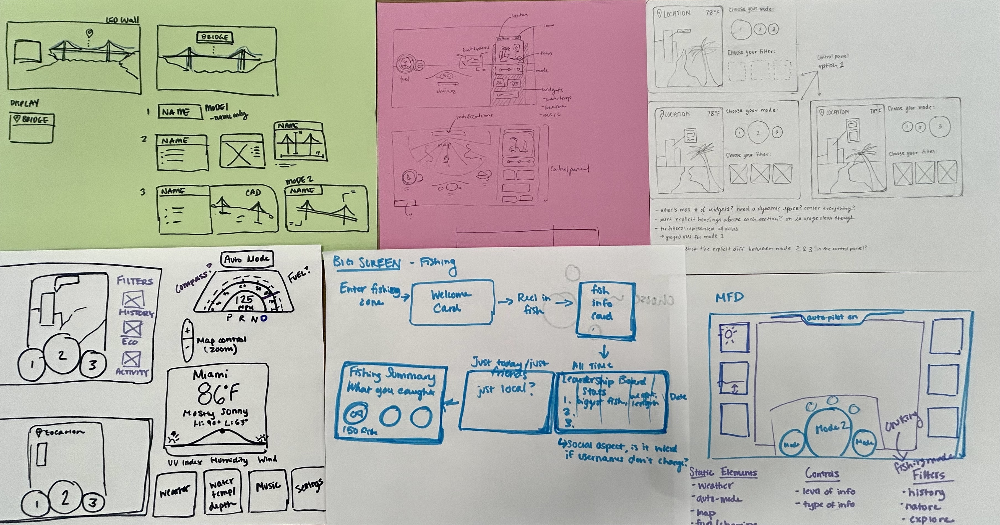
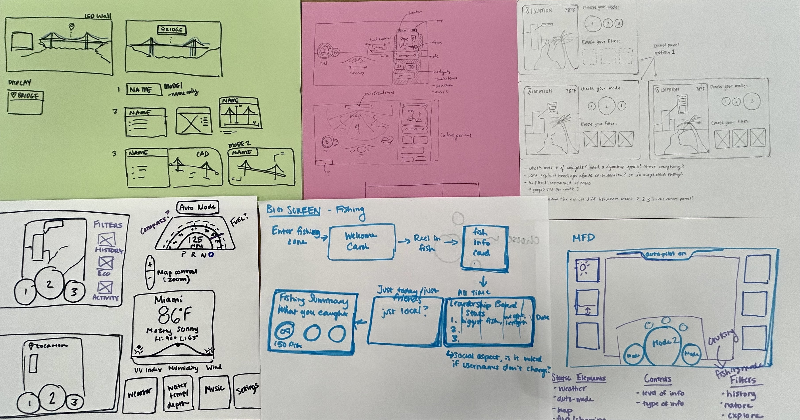
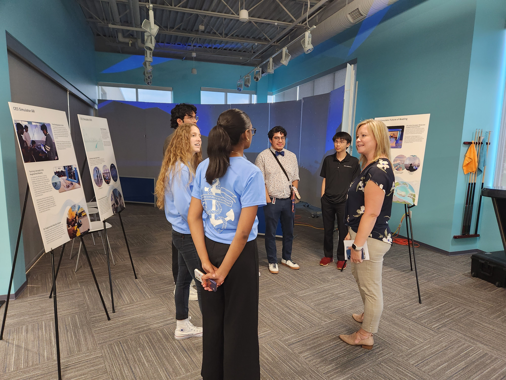
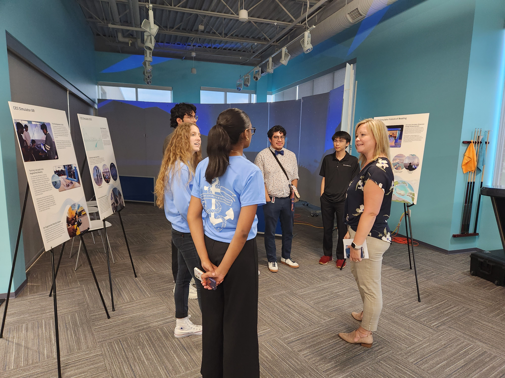

The Brunswick I-Jet lab has been given the responsibility of developing this year’s exhibit for the annual Consumer Electronics Show held in Las Vegas.
The goal is for the exhibit to showcase the future of Brunswick technology and provide attendees with an interactive experience by developing an Augmented Reality (AR) boating experience simulation.
Breakdown
My role as the visual design intern entails designing screens and interactive design for the Multi Functional Display (MFD) and AR elements while collaborating with the CGI team tasked with creating the simulation.
1. Conceptualize and design MFD screens for every phase of the simulation
2. Design AR elements including information cards that would be viewed in the simulation
3. Devise user journeys and storyboards for every phase of the simulation
My role as the visual design intern entails designing screens and interactive design for the Multi Functional Display (MFD) and AR elements while collaborating with the CGI team tasked with creating the simulation.
1. Conceptualize and design MFD screens for every phase of the simulation
2. Design AR elements including information cards that would be viewed in the simulation
3. Devise user journeys and storyboards for every phase of the simulation
The Process
Wireframing and Sketching
Since I joined the project about a month in, I caught up on what had been done thus far and was ready to jump into mocking up some preliminary designs of the MFD. We started off with sketching different formats of vehicle dashboards and what potential features could be included.

Wireframing and Sketching
Since I joined the project about a month in, I caught up on what had been done thus far and was ready to jump into mocking up some preliminary designs of the MFD. We started off with sketching different formats of vehicle dashboards and what potential features could be included.

Iterations
Once we had a general idea of what the MFD should look like, we began flushing designs in Figma. The main focus was to incorporate aesthetics and visuals that gave the screens a futuristic feel since an AR boating experience would be achieved in the future. With constant iterations made to the board, we were able to present new versions at frequent cross-functional meetings in order to get rapid feedback and make changes accordingly. We were also able to get feedback from internal Brunswick design stakeholders who advised us on following Brunswick branding guidelines.
Once we had a general idea of what the MFD should look like, we began flushing designs in Figma. The main focus was to incorporate aesthetics and visuals that gave the screens a futuristic feel since an AR boating experience would be achieved in the future. With constant iterations made to the board, we were able to present new versions at frequent cross-functional meetings in order to get rapid feedback and make changes accordingly. We were also able to get feedback from internal Brunswick design stakeholders who advised us on following Brunswick branding guidelines.
User Testing
We were able to conduct 2 rounds of user testing for different aspects of the AR experience. Employees outside the project took part in testing interactoin with the simulation and MFD. The testing resulted in insight into how useful some features really were and how it was difficult to tell the purpose of some features.
We were able to conduct 2 rounds of user testing for different aspects of the AR experience. Employees outside the project took part in testing interactoin with the simulation and MFD. The testing resulted in insight into how useful some features really were and how it was difficult to tell the purpose of some features.
Intern Presentations
Towards the end of the internship, all the interns had the opportunity to present what we had worked on for the summer to Brunswick leadership including the CEO and CTO. Although the project is still in progress, we were able to talk about all that we had learned and what comes next.

Towards the end of the internship, all the interns had the opportunity to present what we had worked on for the summer to Brunswick leadership including the CEO and CTO. Although the project is still in progress, we were able to talk about all that we had learned and what comes next.
